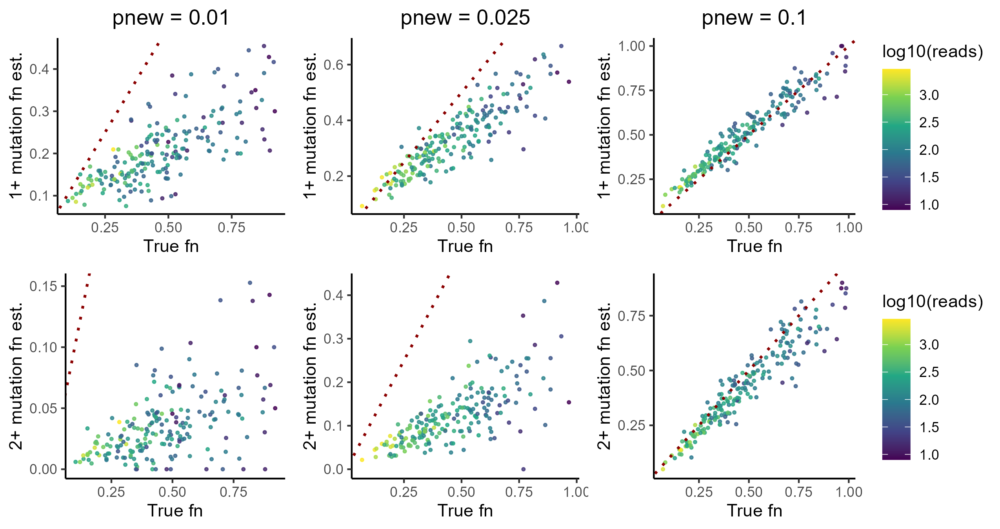

In my last post, I introduced NR-seq by walking through the development of an NR-seq simulator. That post implicitly introduced some of the complexities of interpreting NR-seq data. In this post, we will tackle these challenges head-on and build up a rigorous strategy by which to analyze NR-seq data. We will do this in a piece-meal fashion, first developing a simple but flawed strategy, until eventually working up to mixture modeling (the current gold-standard for NR-seq analyses). No statistical model is perfect though, so we will finish with a discussion and exploration of the limitations of this gold-standard.
NR-seq: a reminder
In an NR-seq experiment, there are two populations of RNA: those synthesized in the presence of label (a.k.a. labeled, or new, RNA) and those which were synthesized prior to metabolic labeling (a.k.a unlabeled, or old, RNA). The first task of any NR-seq analysis is for a given species of RNA (e.g., RNA transcribed from a particular gene), quantify the relative amounts of these two populations. This is referred to as that species’ “fraction new” or “new-to-total ratio (NTR)”. Downstream analyses are then aimed at interpreting these fraction news/NTRs. This post will only concern itself with fraction new estimation. I will use the term “fraction new” for the remainder of this post.
To estimate the fraction new, we rely on the mutational content of mapped sequencing reads. NR-seq involves chemically recoding metabolic label (e.g., s4U) so that reverse transcriptase reads it as a different nucleotide (e.g., a cytosine). Thus, reads from new RNA will have, on average, more mutations than reads from old RNA. This observation is the key to analyzing NR-seq data.
To test the strategies discussed, we will use simulated data. This allows us to know the ground truth and explore the robustness of any approach. Here is the function that we will use to simulate data, as well as some helper functions we can use to assess analysis strategies:
A simple approach: mutational cutoffs
If reads from new RNA have more mutations on average than those from old RNA, maybe we can just use a simple mutational cutoff to classify individual reads as from old or new RNA. The fraction of reads that come from the latter is then our estimate for the fraction new. This approach has been popular since the advent of NR-seq, and is implemented in popular bioinformatic tools for analyzing NR-seq data like SLAMDUNK. Let’s simulate some data and test out this approach
If you run this code with the default simulation parameters, you’ll see that the estimates are decent. The 1+ mutation cutoff for newness looks better than the 2+ cutoff, with the former yielding estimates that consistently correlate pretty well with the simulated ground truth.
So that’s all it takes to analyze NR-seq data? Not so fast. In our simulation, there is a default metabolic label incorporation + conversion rate of 5%. While this is a standard “good” incorporation rate, if you analyze as many NR-seq datasets as I have you will quickly notice that there is a lot of dataset-to-dataset variation in the incorporation rate. For example, there is a tremendous amount of cell line-to-cell line variation in the readiness of s4U incorporation, with some cell lines (e.g., HEK293 and HeLa) uptaking s4U with great tenacity and others (e.g., neuronal cell lines) having typically much lower s4U incorporation rates. In addition, incorporation rates also can correlate with biological condition. For example, knocking out key factors in RNA metabolism (e.g., degradation factors) can significantly impact incorporation rates. In general, incorporation rates seem to correlate strongly with general metabolic rates, and anything that perturbs these rates will likely affect incorporation rates.
This lattermost observation is particularly dangerous when it comes to applying the simple mutation content cutoff analysis strategy. Often, we don’t just care about what an RNA’s dynamics look like in one biological condition, but rather how it differs between two more different conditions (e.g., WT vs. KO of your favorite gene, untreated vs. drug treated, etc.). If an analysis method is not robust to variation in incorporation rates, it risks making technical variability look like biological signal.
Thus, what happens if we simulate a different incorporation rate? If you tweak the simulation above (set phigh in simulate_nrseq() to a different value than its default of 0.05 and rerun code):

The key takeaway from this investigation is that the accuracy of the cutoff-based approach is heavily reliant on the incorporation rate. Since incorporation rate often correlates with biology, this represents a dangerous confounder for mutation cutoff analyses. We need a more robust analysis strategy.
A better idea: statistical modeling
The problem with the cutoff based approach is two-fold:
- It’s possible for reads from labeled RNA to have no mutations. This is because the metabolic label has to compete with the regular nucleotide for incorporation, which is what keeps incorporation rates relatively low in most NR-seq experiments.
- It’s possible for reads from unlabeled RNA to have mutations. This can be due to RT errors, sequencing errors, alignment errors, unmasked SNPs, etc.
Thus, a mutation in a read does not make it definitively from new RNA, and a lack of mutations does not make it definitively from old RNA. How can we navigate this inherent uncertainty? This is exactly what statistical modeling was built for.
Statistical modeling first means coming up with a model that specifies how likely every possible data point is. If you tell me the number of mutable nucleotides, the number of mutations in a read, whether it came from old or new RNA, and whatever can be specified about the process by which mutations arise in reads, I should be able to use this model to calculate a likelihood for that piece of data.
What is a data point’s “likelihood”?
The likelihood of a data point is the probability of seeing that data, given all of the information you provided, often written as P(data | parameters). In this case, we are dealing with discrete data (integer mutation counts), meaning that this likelihood can also be interpreted as the probability of getting that data point given all of the specified parameters. In a continuous setting, interpreting this is a bit more complicated, as the probability of any specific continuous outcome is 0.
In practice, this often involves specifying a convenient to work with probability distribution that describes the variability in your data. To do this, you need to make some assumptions about your data. For NR-seq data, it is common to assume:
- For reads from new RNA, there is a set probability (call it phigh) that a given mutable nucleotide (e.g., uridines in an s4U labeling NR-seq experiment) is mutated. This phigh is the same for all such reads, regardless of the RNA species of origin.
- For reads from old RNA, there is also a set probability of mutation (call it pold) for all such reads.
- All nucleotides are independent. Whether or not a given nucleotide is mutated has no impact on the probability that other nucleotides in that read are also mutated (given the status of the read as coming from old or new RNA).
These are actually the exact assumptions that we used to simulate data above and in the introduction to NR-seq blog. These assumptions lend themselves to a particular model: a two-component binomial mixture model.
Two-component binomial mixture model
“Two-component binomial mixture model” is a mouthful, so let’s break it down.
“Two-component” = the model supposes that there are two populations in your data. In our case, this is reads from old RNA and reads from new RNA.
“binomial” = data from each of the populations is modeled as following a binomial distribution. We’ve seen this distribution in the intro to NR-seq post. It describes a situation where you have a certain number of independent “trials” (e.g., mutable nucleotides), with a set probability of “success” (e.g., mutation of the nucleotide) for each trial.
“mixture model” = you don’t know which population any given data point comes from. This is known as a “latent-variable model”, which can pose some computational challenges when trying to estimate the parameters of such a model. These challenges will turn out to be fairly easy to navigate in this setting, but will limit our efforts to extend and improve this model in future sections.
To summarize, we are assuming that each sequencing read comes from one of two populations: old RNA or new RNA. The mutational content of both types of reads is well modeled as following a binomial distribution. The parameters of these binomial distributions are the number of mutable nucleotides and the probability that each of these nucleotides gets mutated. We don’t need to estimate the number of mutable nucleotides (this is just more data), but we do not know a priori the two mutation rates. Thus, we need to estimate these two parameters, as well as the quantity of primary interest: the fraction new. We can schematize this model as such:
Fitting a two-component binomial mixture model
The basics
A TCBMM has three parameters that need to be estimated for each RNA feature:
- The fraction new
- The probability of a mutation in reads from new RNA (\(p_{\text{high,TC}}\) in the TCBMM figure above)
- The probability of a mutation in reads from old RNA (\(p_{\text{low,TC}}\) in the TCBMM figure above)
What is an “RNA feature”?
Our goal is to estimate the fraction of RNA molecules that are new/labeled for a given species of RNA. Our definition of “species” is technically flexible, and is what I refer to as an “RNA feature”. The most common choice for a feature is a gene. That is, we estimate the fraction of RNA molecules produced from a given gene that are new. In practice though, there are a lot more features we may be interested in analyzing. See the EZbakR preprint for a description of some other options.
In this post, we will estimate these via the method of maximum likelihood. That means we will find parameter estimates that maximum the likelihood of our data. In theory, this is simple: just write a function to calculate the likelihood for any combination of parameter values and data, and use the optimization algorithm of your choice. Here’s what that might look like for the TCBMM:
Already, this quickly whipped up strategy is working pretty well. For one, we have largely solved the problem of phigh/plow dependence on estimate accuracy. Play around with different values of plow/phigh in the simulation and prove this for yourself, but that is the main advantage of the TCBMM approach. You can also see that the more data we have, the better our estimates get (on average). This is a nice trend, and means that paying for more sequencing depth can have a significant positive impact on the quality of our estimates. Technically, a similar trend holds for the mutation content cutoff strategy, but because we can’t be sure if our estimates are biased or not, more reads could just yield higher confidence wrong estimates.
Complete pooling to improve estimate stability
One thing you should note though is that there are a handful of highly inaccurate estimates. These are almost always low coverage features, but can we do better? I will argue yes, thanks to a two-step fitting approach that is implemented in tools like bakR/EZbakR and GRAND-SLAM.
Having to estimate both the labeled/unlabeled read mutation rates as well as the fraction of reads from each population is fundamentally challenging. While it is technically identifiable (ignoring label flipping, which is easy to deal with in this setting), low coverage features typically have too little information to accurately estimate all of these parameters. Does a feature have only a few high mutation content reads because the fraction new is low, or because the mutation rate in reads from new RNA (phigh) low? Tough to distinguish these two if you only have 10s of reads. The common solution to this problem is “complete pooling of the mutation rate estimates”.
Complete pooling refers to a spectrum of model archetypes possible in multi-group analyses (e.g., estimating the fraction new for multiple different RNAs, like RNAs produced from different genes). Instead of estimating a separate phigh and plow for each feature, how about we use all of the data to calculate a single phigh and plow for all features? Doing this means assuming that there is very little feature-to-feature phigh or plow variation, but there is decent evidence that this assumption often holds, especially if analyzing data with standard label times (e.g., multi-hour label times in human cell lines).
The modified strategy might look like:
This should look notably better. For example, here is what I get from a 200 feature simulation for a range of phighs:
Of course, it will always be more difficult to estimate the fraction new for a low coverage feature vs. a high coverage one. Despite this, complete pooling of the mutation rate estimates has significantly stabilized low coverage estimates, making them far more accurate than in the no pooling case.
Going beyond TCBMM
The power of mixture modeling lies both in its robustness as well as its extensibility. TCBMM makes several assumptions about the mutational content of NR-seq reads. Namely that:
- Every uridine in a labeled RNA was equally likely to get replaced with s4U
- Every uridine captured by a sequencing read was equally likely to give rise to a non-s4U-related mutation due to sequencing errors, alignment errors, etc.
In future posts, I will discuss a number of ideas for how to extend and improve NR-seq TCBMM’s. These include:
- Three-component mixture modeling, where a second population of reads from unlabeled RNA with a higher mutation rate (presumably due to heightened alignment errors) is modeled.
- Overdisperse mixture modeling where either an overdisperse binomial distribution (e.g., a beta-binomial) replaces one or both of the binomial distribution components, or where a different incorporation rate parameter is estimated for fast and slow turnover RNA.
- Hierarchical mixture modeling where a sample-wide average incorporation rate is inferred and used as a strongly regularizing prior to estimate feature-specific incorporation rates.
- Modeling the transcription process, which at short label times leads to an expected position-dependency in the incorporation rate (more 5’ nucleotides will be on average less well labeled than more 3’ nucleotides).
While all of these are theoretically promising, the challenge of fitting more complex models is two-fold:
- Their increased flexibility comes with an increased risk of overfitting. In this setting, this leads to estimate instability, where a better model fit yields extreme conclusions about RNA dynamics (i.e., unusually high fraction new and thus unrealistically rapid turnover kinetics).
- While an alternative model may capture one aspect of the true data generating process unaccounted for by TCBMM, it may amplify biases that arise from not accounting for some other aspect of the data generating process.
More on this in later posts!
Summary
In this post, we introduced two common NR-seq analysis strategies: mutational content cutoffs and two-component binomial mixture models (TCBMM’s). We saw how while the former is easy to implement, efficient, and intuitive, it risks providing biased estimates. In addition, the magnitude of these biases is a function of technical details that can vary between biological conditoins. This is why TCBMM’s are typically superior for estimating the fraction of reads that come from labeled RNA in an NR-seq experiment. We also explored how complete pooling of phigh and plow estimates can improve the accuracy of fraction new estimates, especially for low coverage features.